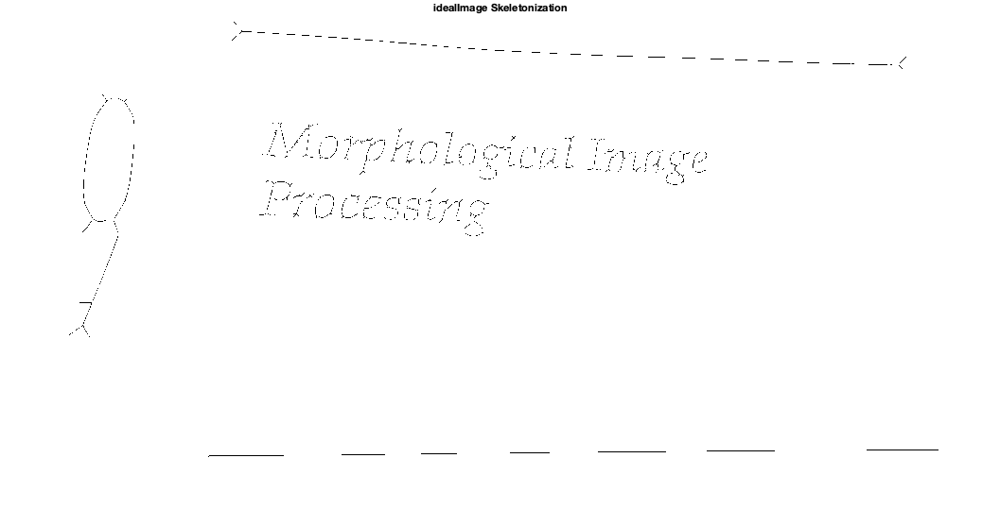

ECE 253, Homework 1
Shivani Bhakta
Contents
Problem 3 Skeletonization
clc; clear; % Load binary images (Data) load('badImFile.mat', 'badIm'); load('idealImFile.mat', 'idealIm');
Part(a)
ideal_skel = 1 - bwmorph(1-idealIm,'skel',inf); figure imshow(ideal_skel) % saveas(figure(7), 'prob3a_skele.jpg') title('idealImage Skeletonization')
Part(b)
To remove the spurs we could first use pruning as discussed in lecture. This involves using of the thinning operator and 8 different structuring elements B1, B2, ..., B8, simultaneously. This will allow the image to get down to single pixel thickness and doing it simultaneously means removing multiple spurs at the same time. A ⊗ B = A – (A ⊛ B), this step can be repeated until some condition like the shape is met. Pruning will remove the spurs, however, it leaves the skeleton much smaller, so we will need to grow it using dilatation. We can dilate each endpoints Xi using H = ones(3), take the intersection with original image (Xi ⊕ H) ∩ A
Problem 4
ANSWER: b)$[(A \ominus S_1) \cap (A^c \ominus S_2)] \oplus S_1$
Structuring element S1 exactly matches one of the small square boxes, which is very similar to the white boxes that remain in image B after the transformation. This is a interesting thing to notice because none of the other white boxes that are touching other boxes than they do not show up in image B.
So, Now let's look at option b, for the first part we erode A using the structuring element S1, this gives us an image with 3x3 white boxes turned into just one 1x1 white pixel, because S1 will overlap/match with all white boxes including the ones with white consecutive neighbours. In simple words, an image with a single dot in place of boxes. Note that the U space will kindof still stay here. Next, the second part of the operation takes the A complement and erodes with S2, here due to the properties of S2 (i.e 3x3 black box with a border of single white pixel or 5x5 white ring), it will always remove the black boxes that doesn't have black border. This is basically when any of the white box in the image A who has neighbours. Thus only the isolated box will stay there. Now intersection betweeen these two images, first one with 1x1 white boxes and second with 3x3 isolated boxes. Hence intersection will give us 1x1 pixel at the center, and now to get the orignal 3x3, will be just need to dilate it with S1. Thus, we dilate the intersection with S1 giving us the image with only isolated white boxes and not the consecutive white boxes aka the U shape in the middle.
Problem 5
| 1 | d |
| 2 | b |
| 3 | g |
| 4 | a |
| 5 | d |
| 6 | i |
| 7 | c |
| 8 | d |